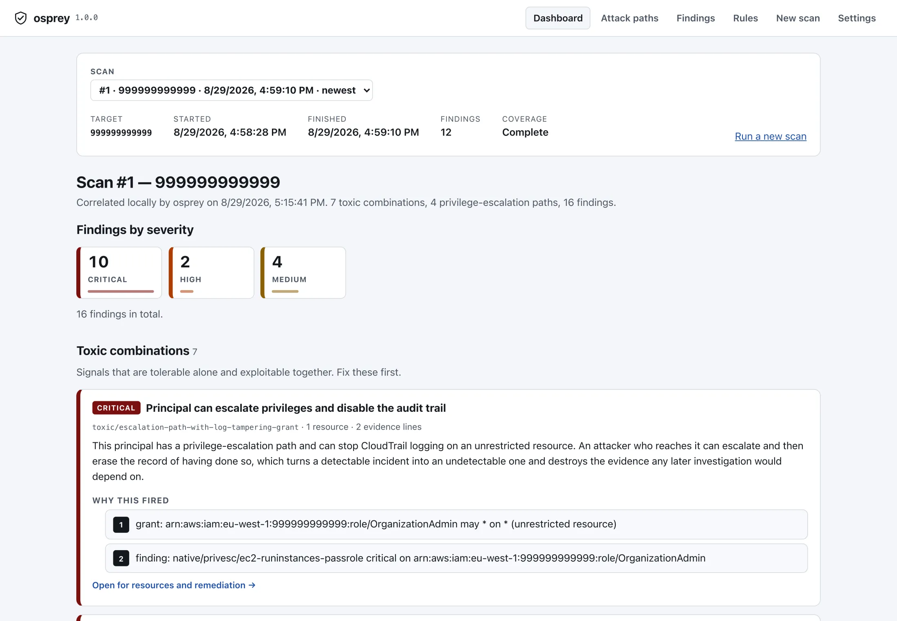
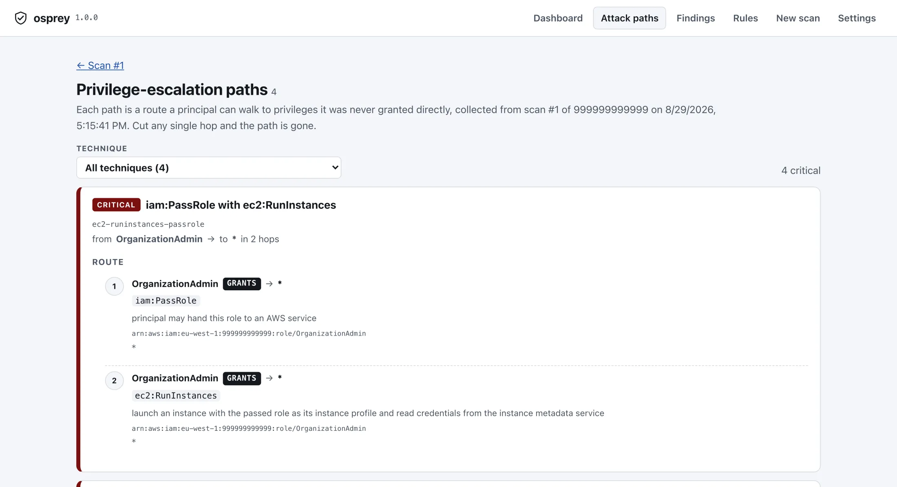
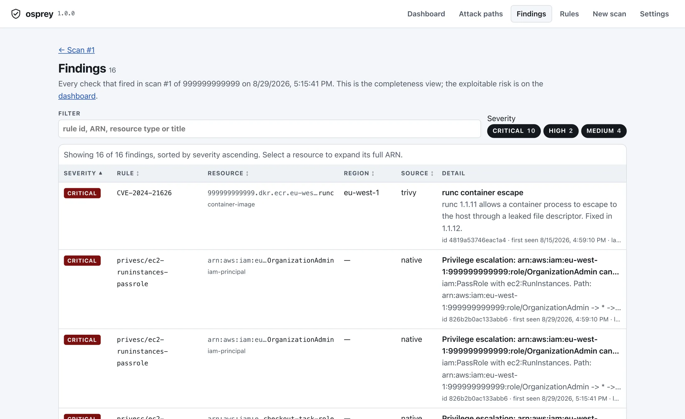

Findings are noise. Combinations are incidents.
A public bucket is a ticket. An over-permissive role is a ticket. A critical CVE is a ticket. They sit in three different tools, get three different owners, and each one is triaged as low priority because, alone, each one is.
An internet-facing service, running an image with that CVE, carrying a role that can pass any role, is not a ticket. It is an account takeover — and nothing in your stack is looking at all three at once.
- 1 Internet-facing service
- 2 Container escape in its image
- 3 Role may pass any role
- = Full account compromise
What you get, five minutes after installing
One local scan of a demonstration account. No agents were installed, nothing was written to the account, and nothing left the machine.



How it works
-
Read, never write
Osprey uses the AWS credentials already on your machine, or a read-only role it generates for you. Every call is a configuration-plane read: no agent, no data-plane access, no snapshot.
-
Build the graph
Principals, policies, resources, trust relationships and internet exposure become one property graph, then CSPM and container findings are attached to the resources they belong to.
-
Correlate, then explain
25 deterministic rules find the combinations. Optionally, a model on your own key ranks and narrates them — reading a pseudonymized digest, never your ARNs.
The part your security team will ask about
Your cloud metadata never leaves your machine. There is no vendor backend to send it to, no account to create, and no telemetry. The only outbound calls are to your own cloud provider — and, if you turn them on, to the scanner engines and the model endpoint you chose.
This is why osprey gets through review at companies that will not put cloud metadata in a SaaS: there is nothing to review. No data processing agreement, no sub-processor list, no breach surface, because the vendor operates no servers at all.
What it deliberately will not do
- No snapshot scanning. Osprey never clones, mounts or reconstructs your block storage. The coverage that costs is documented, not hidden.
- No runtime agent. Nothing is installed on your workloads, so nothing of ours can crash them.
- No data-plane reads. Object contents, database rows and logs are never read — a scan cannot leak what it never touched.
- No auto-apply. Fixes arrive as a pull request a human approves, never as a change to your account.
- No AI in the driver's seat. The model explains and ranks. What gets scanned, stored and reported is fixed code.
Download
One archive per platform, holding the CLI, the console it serves and — everywhere but Linux arm64 — the desktop window. Nothing is entered here and no account is made.
The Windows builds are not signed. Windows says so the first time you launch one, it lets you continue, and the wording and the clicks are below.
- macOS Apple silicon · app and CLI osprey_macos_arm64.zip
- macOS Intel · app and CLI osprey_macos_amd64.zip
- Linux x86-64 · CLI, desktop window, menu entry osprey_linux_amd64.tar.gz
- Linux arm64 · command line only, no desktop window osprey_linux_arm64.tar.gz
- Windows x86-64 · CLI, desktop window, install.ps1 osprey_windows_amd64.zip
Or install the CLI from a terminal
# read it first — served from this domain curl -fsSL https://osprey-hq.com/install.sh | less # then, if you are happy with what it does curl -fsSL https://osprey-hq.com/install.sh | sh
install.sh works out your platform, takes
the archive above and that release's checksums.txt, stops without
installing anything if the sha256 does not match, and copies one
binary — osprey — into /usr/local/bin when that is
already writable and ~/.local/bin when it is not. It never calls
sudo, and it does not install the desktop window: putting an
application into /Applications is something you should choose,
not a side effect of a pipe into a shell. --dry-run
prints the plan and downloads nothing.
Check what you downloaded
Every release publishes checksums.txt. Save it next to the archive and check the bytes yourself:
sha256sum --ignore-missing -c checksums.txt
macOS ships shasum instead:
shasum -a 256 --ignore-missing -c checksums.txt. The
flag is there because checksums.txt covers all five archives and
you took one of them; without it, the four you did not download
are reported as failures.
What your operating system will say
macOS. The app is not signed with a Developer ID or notarized yet, so the first double-click is refused with "Apple could not verify Osprey.app is free of malware". Click Done, open System Settings → Privacy & Security, and click Open Anyway beside the Osprey line; macOS asks once more and then remembers. The CLI that install.sh puts in place never meets any of that — curl does not attach the quarantine flag that a browser download carries.
Windows. The executables are not signed, so SmartScreen shows "Windows protected your PC" and names the publisher as unknown. Click More info, then Run anyway.
Linux. Nothing checks and nothing warns. The desktop window needs libwebkit2gtk (Debian and Ubuntu: libwebkit2gtk-4.1-0); without it osprey-desktop falls back to a browser window.
A Developer ID and an authenticode certificate are bought, not earned, and neither is in place yet. Until they are, the checksums are the thing to check — and they are published for every release, signed or not.
Free for now
One product, all of it
Freeevery capability, no time limit
No card, no account, no trial and no licence key. Nothing on your machine counts down, and no server of ours knows you installed it.
Download- Every scan: CSPM, IAM graph, containers, IaC
- All 25 correlation rules and escalation paths
- HTML and JSON reports
- Scheduled worker with Slack and Teams alerts
- The console and desktop app you see above
- AI review on your own key, or a local model
- One-click Terraform pull requests
- Multi-account views
You pay your own cloud-API and model-token costs directly. There are no servers between you and them to mark up.
Questions
Ask if you want to know whether osprey covers something you run — sometimes the answer is no, and it costs less to hear that from a person than to find it out on day three.
A person answers. We do not run a mailing list, and there is nothing to unsubscribe from.